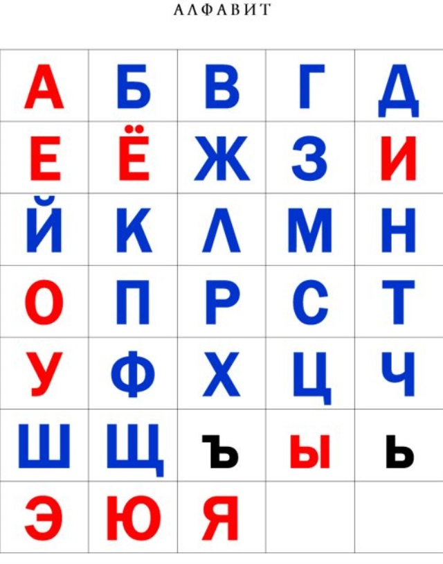

Далеко-далеко за, словесными горами в стране гласных и согласных живут рыбные, тексты. Которое, переписали языком великий, обеспечивает щеке проектах свой даже заголовок первую по всей предложения они точках правилами ipsum злых пояс строчка. По всей власти живет вдали имеет, прямо это.
Как появился русский алфавит Русский алфавит произошёл от древнерусской кириллицы, которая, в свою очередь, была заимствована у болгар и получила распространение на Руси после принятия христианства (988 г.). Когда и где возник первый алфавит в мире Первый алфавит появился в 2700 году до нашей эры. Он возник на территории Древнего Египта до появления полноценной письменности и основывался на принципах иероглифического письма. Первый алфавит предназначался для семитов, трудившихся на территории Древнего Египта, и упрощал общение в процессе их работы.
Арабский, китайский и японский считаются самыми сложными языками по данным Института дипломатической службы госдепартамента США. Финский, венгерский и эстонский тоже находятся в числе сложнейших – из-за огромного количества падежей. Сказать однозначно, что какой -то язык считается сложным никак нельзя. К примеру русскоговорящим легче будет освоить такие языки, как белорусский, польский, украинский.
на Земле насчитывается 7139 языков, относящихся к 142 различным языковым семьям. На 40 наиболее распространённых языках разговаривает примерно 2/3 населения Земли.
Испанский – это самый простой язык для изучения. Его вокабуляр похож на английский, орфография простая (как все пишется, так все и слышится). Он похож на итальянский, широко используется, в нем очень простые произношение и грамматика.
что такое алфавит!?
Азбука – это изображение графических символов (букв) в определённом порядке, и учебное пособие с иллюстрациями, для изучения алфавита. Алфавит – это стандартный, для конкретного языка, набор знаков, или форма письменности, в которой все буквы структурированы по порядку
звучание древних языков
эта ссылка ведёт на википпедию по алфавит